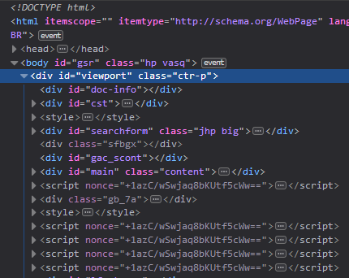
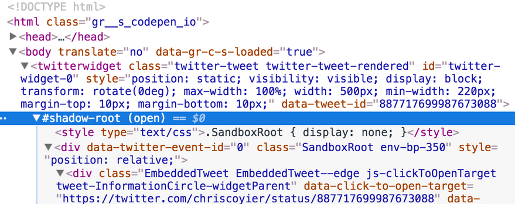
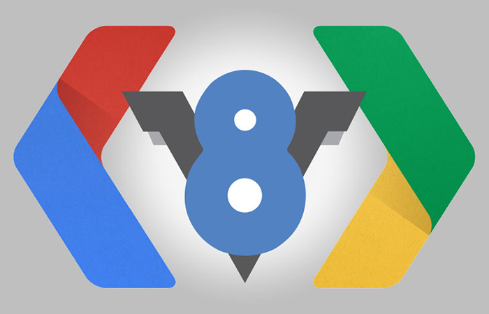
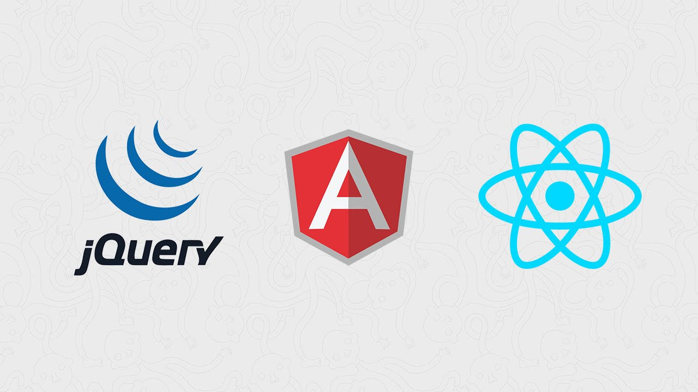

para Padawans
JavaScript para Padawans
Gonçalves
O JavaScript foi criado por Brendan Eich na Netscape (um dos precursores dos navegadores web), inicialmente sendo chamado de LiveScript, mas logo seu nome foi mudado para JavaScript.
No entanto, por conta do Java, seu nome teve que ser mudado, sendo oficialmente chamado de ECMAScript
ECMA é a empresa que criou e atualmente mantem a linguagem
JavaScript não é Java, mas ...

O nome surgiu por causa do Java e atualmente ambas tem muito em comum
As páginas são formadas pelo DOM (Document Object Model)
DOM é a composição de NODOs que formam as páginas
Shadow DOM
Com a chegada do HTML5, surgiram os Web Components
Manipulando o DOM
Muitas coisas legais podem ser feitas com JavaScript em menos de 140 caracteres
Fonte: Dwitter
- Multi-paradigmas
- Baseada em objetos
- Interpretada
- Suporte a programação Orientada a Objetos, Imperativa e Funcional
Web, Desktop, Mobile, Games (Unity, Phaser), Satélites ...

Drinks
Prototypes
Possibilidade de alterar o comportamento padrão de um objeto
V8 Google Chrome Engine
Cliente e Servidor
VanillaJS, JQuery, Angular, React
